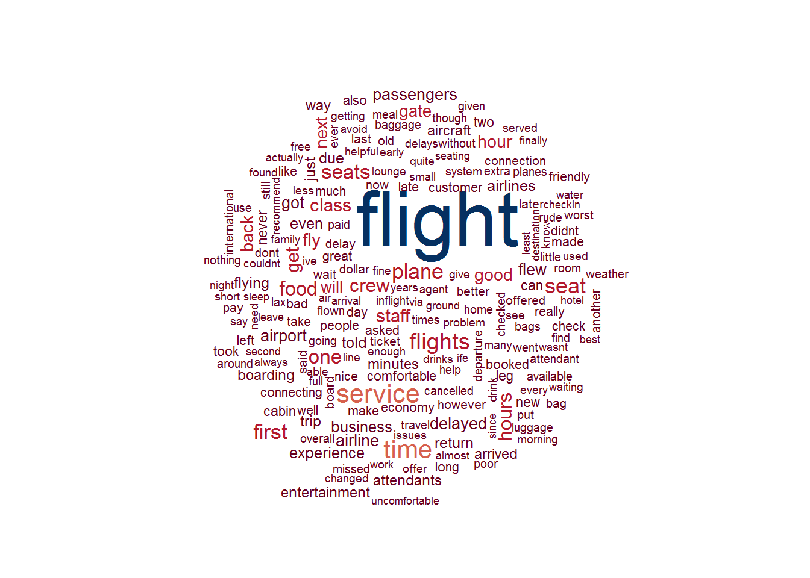

Overall frequent terms used when speak to flights with three airlines.

Different frequent terms in reviews for three airlines.
We can see the most common things the passengers care about are plane, crew, seat, time and food. We also see some judgement words such as good, bad, poor and comfortable. Comparing different airlines, Delta has some positive words like good, great, nice, excellent. But the other two have negative words like old, late, delayed and cancelled. From the word cloud we can tell that passengers are more satisfied with Delta Airline than American and United Airlines.
Delta airline on average has positive comments while the other two are more negative. US citizens are more likely to give negative comments. The reason might be that service on international flights is better than that on domestic flights.
Overall, comments on Delta are better than those on the other two. Interestingly, people in economy class are more likely to give negative feedbacks, while business and first class passengers mostly give positive comments.
The plot shows the sadness level for each comment. This can help us understand how sad the passengers are about the airlines. The sadness level is calculated by the Regressive Imagery Dictionary. Lots of comments have sadness level 0. But we want to focus on those who are sad about the airlines. To make the plot better for visualization, we filtered out level 0 points. From the plot we see that American and United airlines have more passengers with higher sadness level. Delta have only a few passengers with sadness level greater than 2. We can tell passengers are sadder about American and United airlines.
As a brief summary for Text Analysis, Delta airline provide more pleasant flight experience than American and United airlines. International flights provide better service than domestic. Those suffer the most are economy class passengers. But Delta on average still have above neutral comments from economy class. This might explain why delta tickets are always more expensive. But if you want a better flight experience, Delta will definitely be your first choice.